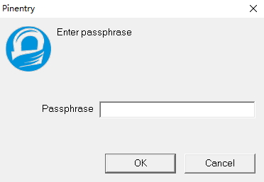

gpg --gen-key gpg (GnuPG) 2.0.30; Copyright (C) 2015 Free Software Foundation, Inc. This is free software: you are free to change and redistribute it. There is NO WARRANTY, to the extent permitted by law.
Please select what kind of key you want: (1) RSA and RSA (default) (2) DSA and Elgamal (3) DSA (sign only) (4) RSA (sign only) Your selection?
生成的签名类型：默认即可
RSA keys may be between 1024 and 4096 bits long. What keysize do you want? (2048)
密钥长度：默认
Requested keysize is 2048 bits Please specify how long the key should be valid. 0 = key does not expire <n> = key expires in n days <n>w = key expires in n weeks <n>m = key expires in n months <n>y = key expires in n years Key is valid for? (0)
密钥有效期：根据需要，（默认）
Key does not expire at all Is this correct? (y/N)
确认上面的信息是否正确。
GnuPG needs to construct a user ID to identify your key.
Real name: qianjl Email address: qianjl.cn@gmail.com Comment: You selected this USER-ID: "qianjl <qianjl.cn@gmail.com>"
Change (N)ame, (C)omment, (E)mail or (O)kay/(Q)uit?
确定之后会弹出密码框： 
记住密码，以后publish项目会用到。
We need to generate a lot of random bytes. It is a good idea to perform some other action (type on the keyboard, move the mouse, utilize the disks) during the prime generation; this gives the random number generator a better chance to gain enough entropy. We need to generate a lot of random bytes. It is a good idea to perform some other action (type on the keyboard, move the mouse, utilize the disks) during the prime generation; this gives the random number generator a better chance to gain enough entropy. gpg: key 616D288C marked as ultimately trusted public and secret key created and signed.
gpg: requesting key 616D288C from hkp server pool.sks-keyservers.net gpg: key 616D288C: "qianjl <qianjl.cn@gmail.com>" not changed gpg: Total number processed: 1 gpg: unchanged: 1